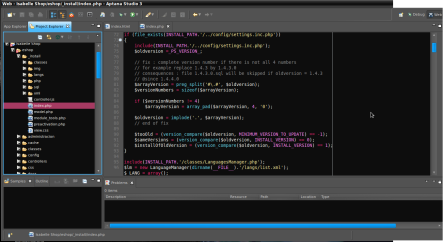

File Editing Commands and Wildcards

So far in this book we have looked at the history of Linux, the differences between Linux and Windows, and how to work with command lines. Now that you have that basic knowledge, it is time to know how to create, edit, and remove different files from your computer using the command line interface.
This may seem like pointless action, as many of the things that are involved in this process may be easier to do in the graphical file manager. After all, dragging and dropping files makes it a lot easier to copy them from one location to another, rather than typing the command into the command line. On the other hand, there are various reasons as to why you would want to be able to do this in the command line.
The best reason to learn how to manipulate files in the command line is the command line makes complicated tasks easier to handle. For example, if you wanted to copy just one file to a particular directory, which could easily be done in the graphic file manager. The same applies if you would like to copy a group of files to a new, empty directory. However, if you wanted to copy a group of text files from one directory to another, and the second directory already had some of those text files in it, then this could create a problem.
Whereas it may take you a little bit of time to figure out just exactly how to sort it out in the file manager, with the command line, it is as easy as typing in the following command:
[me@mylinux me]$ cp –u *.txt destination
There are many commands that can be used to create, edit, or delete files, but there are four that are used more frequently than all the others. These are rm/rmdir, mkdir, cp, mv.
Wildcards
These are thefundamental commands used to manipulate files, and are some of the most powerful commands on Linux. However, there are a couple of unique characters that help the commands to be more effective. They are known as wildcards and are the characters that allow you to choose files based on the characters in their filenames. Four wildcards are utilized regularly. These are:
? – The question mark matches any single characters
* - The asterisk matches any characters that are found before it
[characters] – this looks for any characters that are part of the set characters. The sets can also be represented as POSIX character classes (or Portable Operating System Interface Character Classes), such as [:alpha:] for Alphabetic characters, [:lower:] lowercase characters, [:cntrl:] for control characters and [:digit:] for digits or numerals.
[!characters] – this will look for any characters that are NOT part of the group
The immediate benefits of using wildcards may not be evident, until you understand just how much power they can give you. They can allow you to have very fine control over your search criteria when you are looking for files.
Case in point; if you are looking for files that begin with the letter K, then you would type in For those looking for files that begin with the letter u and have the txt at the end, then you could enter If you would like to find all files that have the word search at the beginning, followed by 3 numerals, then you would enter SEARCH. [[:digit:]] [[:digit:]] Wildcards are some of the most useful tools you have in Linux, so learning them is important. Make sure to add them to your cheat sheet if they are not already included.